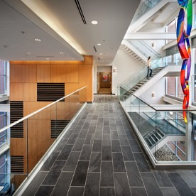
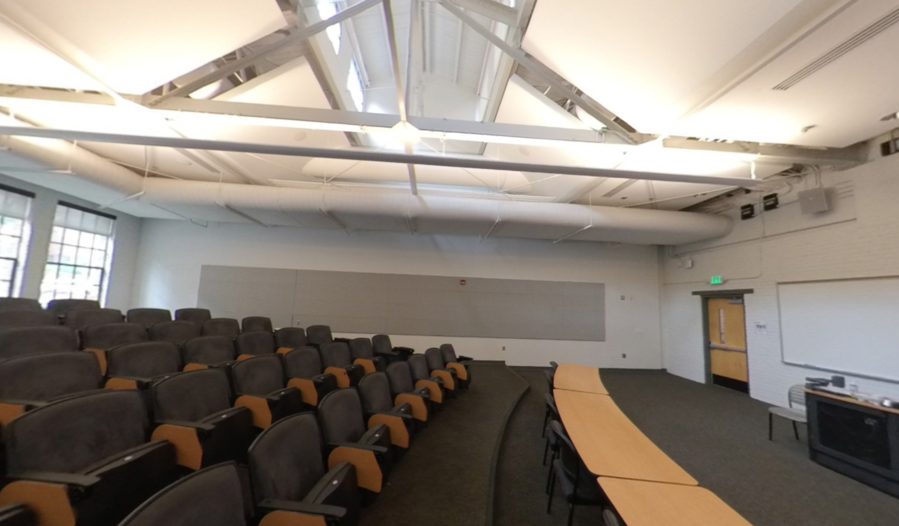

Kate Pearce
Research
My research interests include sensitivity analysis, mathematical modeling, computational algebra, and numerical linear algebra. Here's my CV.
My Math Journey
Unlike some folks, I did not originally plan on being a mathematician. Like all folks, my journey has been nonlinear. I've always loved math, but I also loved reading, analyzing, and writing about literature.
Eventually I settled on both, though I was told (without solicitation) by some professors in each department that I was making a mistake. While it was a lot more work and certainly more taxing on my mental health (important factors to consider!), I graduated with my B.A. in English and my B.S. in math. Ironically, the more I've pursued math, the more I've had to rely on skills acquired through my liberal arts degree.
Though I started my PhD in pure math in Denver, my husband got stationed at Ft. Bragg in North Carolina, so I transferred to NCSU after finishing up my MS. Up to that point, I had been mostly interested in computational algebra (coding theory). At NC State, I realized (without consciously doing so) that I shouldn't choose between two subjects about which I felt equally passionate (algebra and modeling). As I experienced at UT, there was a deep unconscious knowing to pursue what I loved and trust that "the right path forward" would emerge. Gratefully, one did. As Glennon Doyle says, the braver I am, the luckier I seem to get.
My PhD thesis considers the problem of mathematically modeling the chemical reactions that occur during hemostasis, the first stage of wound healing. We developed a model based on mass-action kinetics and have begun tackling many of the associated problems; I discuss all of this in detail in my research statement, so please peruse below if you want to learn more! Although modeling was brand-new to me, which was honestly pretty intimidating, I was drawn to it because it gave me flexibility to consider a wide range of mathematical approaches in a variety of applications. Currently, I am developing and implementing numerical linear algebraic algorithms for practical parameter identifiability analysis, which means that I get to use on my discrete algebraic skills for modeling questions! (By the way, we now have a semi-official title for this "right path" procedure I've described, aptly named for the computational algorithm we stole the idea from--" The Greedy Algorithm !")
The set of mathematicians is not a totally ordered set.
--Dr. Richard McGehee, paraDIGMS Fall 2021 Conference
Image
Fit


Left & Right
Morbi mattis mi consectetur tortor elementum, varius pellentesque velit convallis. Aenean tincidunt lectus auctor mauris maximus, ac scelerisque ipsum tempor. Duis vulputate ex et ex tincidunt, quis lacinia velit aliquet. Duis non efficitur nisi, id malesuada justo. Maecenas sagittis felis ac sagittis semper. Curabitur purus leo, tempus sed finibus eget, fringilla quis risus. Maecenas et lorem quis sem varius sagittis et a est. Maecenas iaculis iaculis sem. Donec vel dolor at arcu tincidunt bibendum. Interdum et malesuada fames ac ante ipsum primis in faucibus. Fusce ut aliquet justo. Donec id neque ipsum. Integer eget ultricies odio. Nam vel ex a orci fringilla tincidunt. Aliquam eleifend ligula non velit accumsan cursus. Etiam ut gravida sapien. Morbi mattis mi consectetur tortor elementum, varius pellentesque velit convallis. Aenean tincidunt lectus auctor mauris maximus, ac scelerisque ipsum tempor. Duis vulputate ex et ex tincidunt, quis lacinia velit aliquet. Duis non efficitur nisi, id malesuada justo. Maecenas sagittis felis ac sagittis semper. Curabitur purus leo, tempus sed finibus eget, fringilla quis risus. Maecenas et lorem quis sem varius sagittis et a est. Maecenas iaculis iaculis sem. Donec vel dolor at arcu tincidunt bibendum. Interdum et malesuada fames ac ante ipsum primis in faucibus. Fusce ut aliquet justo. Donec id neque ipsum. Integer eget ultricies odio. Nam vel ex a orci fringilla tincidunt. Aliquam eleifend ligula non velit accumsan cursus. Etiam ut gravida sapien.
Vestibulum ultrices risus velit, sit amet blandit massa auctor sit amet. Sed eu lectus sem. Phasellus in odio at ipsum porttitor mollis id vel diam. Praesent sit amet posuere risus, eu faucibus lectus. Vivamus ex ligula, tempus pulvinar ipsum in, auctor porta quam. Proin nec dui cursus, posuere dui eget interdum. Fusce lectus magna, sagittis at facilisis vitae, pellentesque at etiam. Quisque posuere leo quis sem commodo, vel scelerisque nisi scelerisque. Suspendisse id quam vel tortor tincidunt suscipit. Nullam auctor orci eu dolor consectetur, interdum ullamcorper ante tincidunt. Mauris felis nec felis elementum varius. Nam sapien ante, varius in pulvinar vitae, rhoncus id massa. Donec varius ex in mauris ornare, eget euismod urna egestas. Etiam lacinia tempor ipsum, sodales porttitor justo. Aliquam dolor quam, semper in tortor eu, volutpat efficitur quam. Fusce nec fermentum nisl. Aenean erat diam, tempus aliquet erat. Etiam iaculis nulla ipsum, et pharetra libero rhoncus ut. Phasellus rutrum cursus velit, eget condimentum nunc blandit vel. In at pulvinar lectus. Morbi diam ante, vulputate et imperdiet eget, fermentum non dolor. Ut eleifend sagittis tincidunt. Sed viverra commodo mi, ac rhoncus justo. Duis neque ligula, elementum ut enim vel, posuere finibus justo. Vivamus facilisis maximus nibh quis pulvinar. Quisque hendrerit in ipsum id tellus facilisis fermentum. Proin mauris dui.